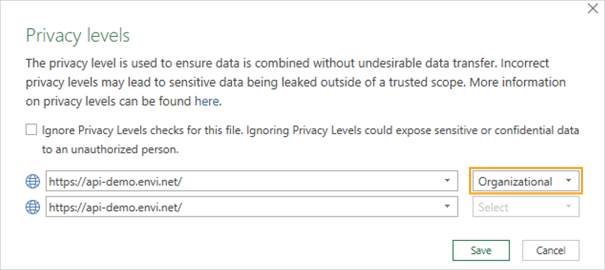
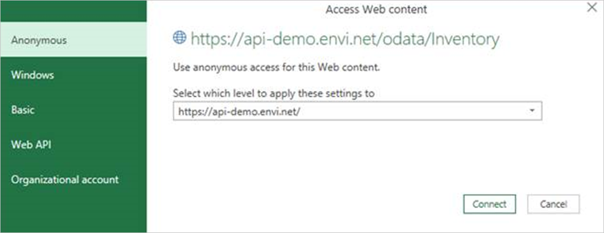
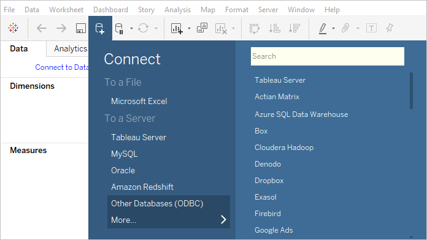
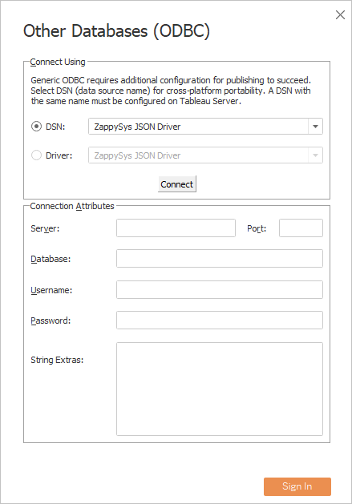

BI Tool Use Cases
Business intelligence tools help you to improve decision-making and social collaboration. They provide the means for efficient reporting, thorough analysis of data, statistics, and analytics.
Power BI, Excel, Tableau, and Klipfolio are data visualization and business intelligence tools that convert data from different data sources to interactive dashboards and BI reports.
Security is a priority for Envi; therefore, we support tools that adhere to the latest standards in secure authentication.
Create a custom query to visualize the data you want in Power BI and MS Excel. The custom query retrieves the JWT token and then uses it in subsequent requests to the server.
Power BI
To work easily with the Envi data in Power BI, you can use the following methods:
Building custom query with Power BI
To create the query and use it for data retrieving in Power BI, do the following:
- Select Get Data > Blank Query.

- In Power Query Editor, select Advanced Editor from the Home or View tab.

-
Use the following template to populate data from the needed endpoint.
Here, you should populate the following data:BASE_URL–API URL (for example, api-demo.envi.net.RESOURCE_RELATIVE_URL–URL to a specific resource (for example, Inventory, Vendors, Manufacturers).USER_NAME,PASSWORD–your credentials.DATASOURCE_NAME–arbitrary data-source name.-
//Query=[ #"$filter"="", #"$orderBy"=""]–additional query options such as$filter,$orderBy,$top,$skip,$search.Note
If you need to use any query option, specify this line in custom query
(Query=[ #"$filter"="", #"$orderBy"=""]).
Note
The 099153c2625149bc8ecb3e85e03f0022 client_id is the same for all clients.
Examplelet api_base_url = "BASE_URL", // e.g. https://api-demo.envi.net/, resource_relative_url = "RESOURCE_RELATIVE_URL", //e.g. odata/Inventory user_name = "USER_NAME", password = "PASSWORD", GetJson = Json.Document(Web.Contents(api_base_url & "oauth2/token", [ Headers = [#"Accept"="application/json", #"Content-Type"="application/x-www-form-urlencoded;charset=UTF-8"], Content = Text.ToBinary("username="&user_name&"&password="&password&""&"&grant_type=password&client_id=099153c2625149bc8ecb3e85e03f0022") ])), access_token = GetJson[access_token], AccessTokenHeader = "Bearer " & access_token, JsonTable = Json.Document(Web.Contents( api_base_url & resource_relative_url, [ //Query=[ #"$filter"="", #"$orderBy"=""], Headers=[#"Authorization" = AccessTokenHeader ] ])), #"DATASOURCE_NAME" = Table.FromRecords(JsonTable[value]) in #"DATASOURCE_NAME" -
As the sample, for data retrieving, use the Inventory resource and demo environment (api-demo.envi.net).

- Select the Done button. As a result, Excel has executed the query and the needed data is shown.

- Select the Close & Apply icon to populate data to the Excel spreadsheet.

Custom Query is ready for the data retrieving. To refresh data, call the context menu of the needed query with right-click and then select Refresh. To modify the data, select Edit.
Note
During the first query execution, you’ll see the warning message about data privacy and storage of sensitive information. It is recommended to set privacy credentials to Organizational.
Integration with ODBC driver with Power BI
You can connect Power BI with the ODBC driver and retrieve the needed data. For this, do the following:
- Open the Power BI sheet, then go to the Home tab. On Get Data, select More.
- In the Get Data dialog box, on the Other tab, select ODBC, and then select Connect.
-
From the Data source names (DSN) list, select ZappySys JSON Driver and click OK.
Note
To specify the custom endpoint, use a query with additional parameters. For this, select Advanced Options on the Get Data from ODBC dialog box, and then specify your query with the Src option.
-
When the data is downloaded, in the Navigator dialog box, expand the DATA folder, select value, and then click Load. The Load dialog box with uploading progress appears.
- Once the data is uploaded, a dataset and a list of all available columns are shown.
- To refresh the date, select the Refresh icon.
The integration with Power BI is finished. You can use retrieved data easily for your further needs.
MS Excel
To work with Envi data easily in MS Excel, you can use the following methods:
Building custom query with MS Excel
To create the query and use it for data retrieving in Excel, do the following:
- Go to the Data tab, then select Get Data > From Other Sources > Blank Query.
- In Power Query Editor, select Advanced Editor from the Home or View tab.
-
Use the following template to populate data from the needed endpoint.
Here, you should populate the following data:BASE_URL–API URL (for example, api-demo.envi.net).RESOURCE_RELATIVE_URL–URL to a specific resource (for example, Inventory, Vendors, Manufacturers).USER_NAME,PASSWORD–your credentials.DATASOURCE_NAME–arbitrary data-source name.-
//Query=[ #"$filter"="", #"$orderBy"=""]–additional query options such as$filter,$orderBy,$top,$skip,$search.Note
If you need to use any query option, specify this line in custom query
(Query=[ #"$filter"="", #"$orderBy"=""]).
Note
The 099153c2625149bc8ecb3e85e03f0022 client_id is the same for all clients.
Examplelet api_base_url = "BASE_URL", // e.g. https://api-demo.envi.net/, resource_relative_url = "RESOURCE_RELATIVE_URL", //e.g. odata/Inventory user_name = "USER_NAME", password = "PASSWORD", GetJson = Json.Document(Web.Contents(api_base_url & "oauth2/token", [ Headers = [#"Accept"="application/json", #"Content-Type"="application/x-www-form-urlencoded;charset=UTF-8"], Content = Text.ToBinary("username="&user_name&"&password="&password&""&"&grant_type=password&client_id=099153c2625149bc8ecb3e85e03f0022") ])), access_token = GetJson[access_token], AccessTokenHeader = "Bearer " & access_token, JsonTable = Json.Document(Web.Contents( api_base_url & resource_relative_url, [ //Query=[ #"$filter"="", #"$orderBy"=""], Headers=[#"Authorization" = AccessTokenHeader ] ])), #"DATASOURCE_NAME" = Table.FromRecords(JsonTable[value]) in #"DATASOURCE_NAME" -
As the sample, the Inventory resource and demo environment (api-demo.envi.net) can be used for data retrieving:
- Select the Done button. As a result, Excel has executed the query and the needed data is shown.
- Select the Close & Load icon to populate data to the Excel spreadsheet.
Custom Query is ready for the data retrieving. To refresh data, call the context menu of the needed query with right-click and select Refresh. To modify the data, select Edit.
Note
During the first query execution, you’ll see the warning message about data privacy and storage of sensitive information.
To resolve this issue, do the following:
- Click Continue and set privacy credential to Organizational. 
- Click Save.
Your choice will be saved for the given external data source (for example, api-demo.envi.net).
Also, you can see the message about credentials for the external data source.
To resolve this issue, do the following:
- Click Edit Credentials. 
- Select the Anonymous access, and then click the Connect button.
Your choice will be saved for the given external data source (for example, api-demo.envi.net).
Integration with ODBC driver with MS Excel
You can connect MS Excel with the ODBC driver and retrieve the needed data. For this, do the following:
- Open a new Microsoft Excel sheet, go to the Data tab, select From Other Sources, and select From Microsoft Query.
- Select ZappySys JSON Driver, then select OK.
- When the Data Source is successfully connected, select value from Available tables and columns, move it to Columns in your query, and select Next.
- Skip the Filter Data and Sort Order steps. Select the View data or edit query option on the Finish dialog box, and then click Finish.
- In the Microsoft Query editor, select the SQL icon.
-
In the SQL statement dialog box, if needed, modify the query, and select OK.
Also, you can use the query example copied on the last step (Integrators, step 14) of driver configuration. With this sample query, you can specify additional parameters different from the default driver configuration, such as modifying the endpoint address and using the same driver instance for different entities. The following options are available:
WITH( Src='https://api-demo.envi.net/odata/Inventory' ,DataConnectionType='OAuth' ,TokenUrl='https://api-demo.envi.net/oauth2/token' ,ScopeSeparator='{space}' ,OAuthVersion='OAuth2' ,GrantType='Password' ,UserName=email@domain.com' ,ClientId='099153c2625149bc8ecb3e85e03f0022' ,UseCustomApp='True' ,Filter='$.value[*]' ,NextUrlAttributeOrExpr='$.[''@odata.nextLink'']' )Populate only the option(s) you would like to change. For example, to retrieve Vendors data with the driver, which is configured to use the Inventory endpoint, specify the Src option with a new URL https://api-demo.envi.net/odata/Vendors. Here is the full query with all available columns:
-
Once you close the Microsoft Query editor, the Import Data dialog box will be shown. At this point, you have a few options on how to use the retrieved data. For example, select Table and then click OK.
- MS Excel will execute your query and populate the sheet with the retrieved data.
- To refresh data, go to the Data tab and select the Refresh All icon.
The integration with Microsoft Excel is complete. You can use the retrieved data easily for your further needs.
Tableau
Integration with ODBC with Tableau
You can connect Tableau with the ODBC driver and retrieve the needed data. For this, do the following:
- In the Tableau app, create a New book.
- On the Data tab, select the Connect to Data link.
- Select Other Databases (ODBC). 
- Select ZappySys JSON Driver as the DNS, and then select Connect.
- After the connection is established, select Sign In. 
- The driver is added to Connections. In the Table section, select the Search icon, and then double-click the value.
The data is populated successfully.
- Navigate to a sheet and continue working with the data according to your needs.
- To refresh the data, select Data > value (DATA.value) > Refresh.
Integration with Microsoft SQL Server with Tableau
Except for the direct ODBC driver connection, you can also connect Tableau using Linked Server (Integrators, step 20), which is already connected to the ODBC driver. For this, do the following:
- In the Tableau app, create a New book.
- On the Data tab, select the Connect to Data link.
- Select Microsoft SQL Server.
- Provide the SQL Server connection information and click Sign In.
- The SQL Server is added to Connections. Click New Custom SQL, then specify a query using the OPENQUERY syntax and click OK.

The SQL query is created and data is populated successfully.
- Go to a sheet and continue working with the data according to your needs.

Integration with Tableau is finished. You can use retrieved data easily for your further needs.
Klipfolio
The Klipfolio Dashboard allows you to combine all of your marketing data in one place to create powerful and compelling data dashboards.
This guide describes how to configure pie chart components with Purchase Order’s vendors and statuses as a sample.
Creating the dashboard with the needed data using the Klipfolio service consists of two stages:
New data source with Klipfolio
To create a new data source and connect it to the dashboard, do the following:
- Go to the Data Sources menu item. Then, select Create a New Data Source.
- Select the REST/URL data source type.
-
To configure data source:
-
Type the needed URL.
Note
For example, ``` https://<HostName>/odata/PurchaseOrders ``` (in case, **<HOSTNAME>** = api-demo.envi.net). -
Select the JSON data format and the GET HTTP method.
Note
Leave the **UTF-8** value in the **Encoding** field. -
Type the following query parameters:
- Name: Authorization
- Value: Bearer [auth_token]
- Type: Header
- Name: Authorization
-
-
Open the Authentication (OAuth, 2-Step, X-WSSE, or Basic) section, then do the following:
- Select the 2-Step Authentication type.
- Type your login and password.
- Select the TEXT response and the POST method.
-
In the Body field, type the value using the following template:
grant_type=password&username=[username]&password=[password]&client_id=099153c2625149bc8ecb3e85e03f0022Note
The **099153c2625149bc8ecb3e85e03f0022** client_id is the same for all clients. -
Specify the following parameters:
- Name: Content-Type
- Value: application/x-www-form-urlencoded
- Type: Header
- Name: Content-Type
-
In the Auth URL field, type the following URL:
Note
For example, ``` https://<HOSTNAME>/oauth2/token ``` (in case, **<HOSTNAME>** = api-demo.envi.net). -
In the Token Path field, type the following value: "access_token":"(.*?)"
- Select the GET logout method and leave the Logout URL field empty.
-
Submit the configuration.
- Verify the entered data and select Continue.
- Save the data source with the following steps:
- Type the Name and Description.
- Specify Queue for Refresh.
- Set your Sharing preferences.
After all entered data is saved, you will see your newly created data source.
New dashboard with Klipfolio
To create a new dashboard with the needed data:
- In the Dashboards section of the Klipfolio menu, select + to create a new dashboard.
- Select Add a Klip, then Build a Custom Klip.
- To use an existing data source from the library, at the bottom of the page, in the Data tab, click the + Add Data Source.
- In the Add a Data Source dialog box, select the data source you have already created.
- As a sample, select the Pie Chart component.
- From the Values menu, select the values you want to add to the pie chart. For example, Purchase Orders.
- To group all purchase orders by label, select the Group Repeating labels checkbox on the Properties tab.
-
From the Labels menu, select the label you want to add to the pie chart. For example:
- Purchase Order’s Vendors pie chart
or - Purchase Order’s Statuses pie chart
- Purchase Order’s Vendors pie chart
-
Go to the Pie Chart Properties tab and select the appropriate number of pie chart slices.
Note
Make the pie chart large so that it doesn’t have the pagination showing.  -
By default, there are only nine colors for pie slices, so that you can see a few slices with the same colors. To add more colors to your chart, do the following:
- Select the Override the default colors checkbox.
- Click the + icon to add a new color and select the appropriate one.
- Go to the Klip Properties tab, and then add the Klip title.

- Add Description.
- Select the Sharing options if needed.
- Save your newly created Klip.
Pie Chart for Purchase Orders is configured and ready for use.